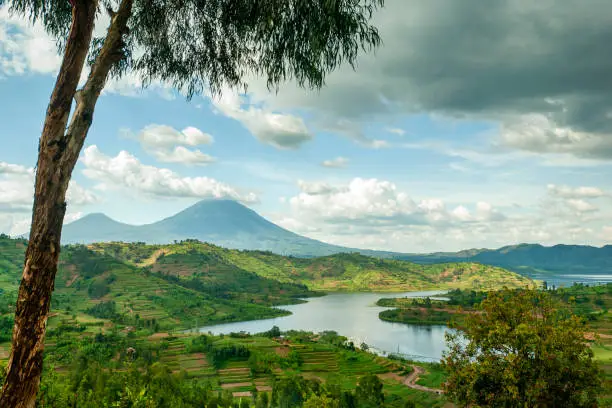
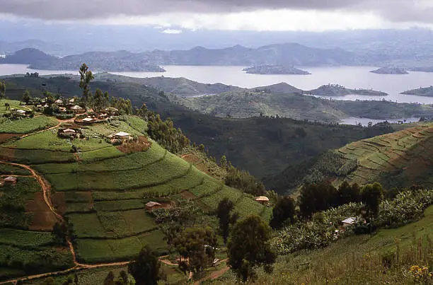
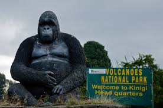
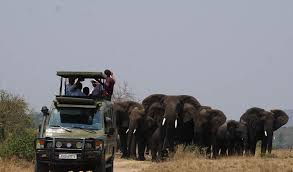
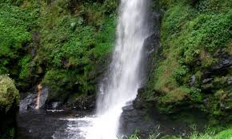
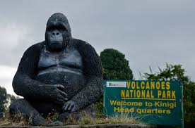
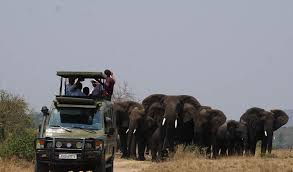
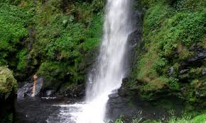

Information About Rwanda
Rwanda, officially the Republic of Rwanda, is a landlocked country in the Great Rift Valley of Central Africa, where the African Great Lakes region and Southeast Africa converge. Located a few degrees south of the Equator, Rwanda is bordered by Uganda, Tanzania, Burundi, and the Democratic Republic of the Congo.
Weather
Temperature: 5°C
Wind Speed: 10 km/h
Wind Chill: Calculating...
Gallery
These are one of the best major touristic attraction site in Rwanda, one can wish and dream to visit.
  




